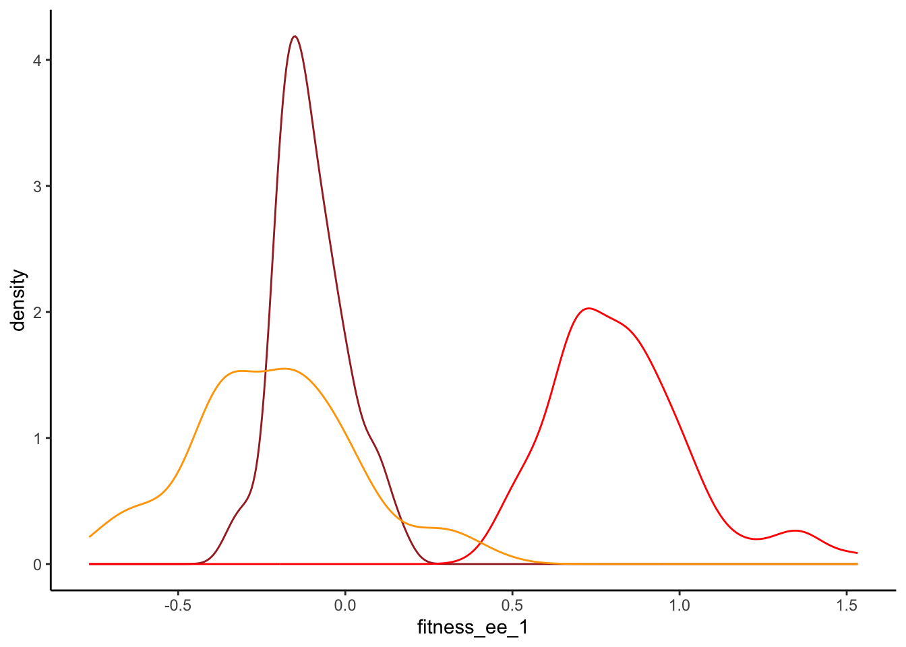
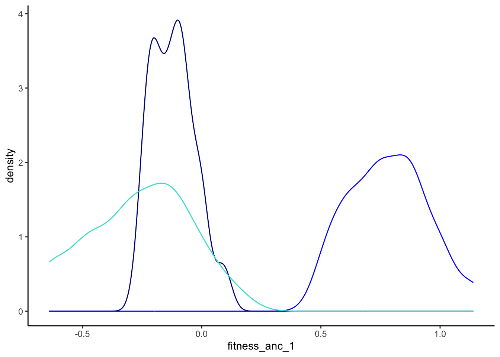
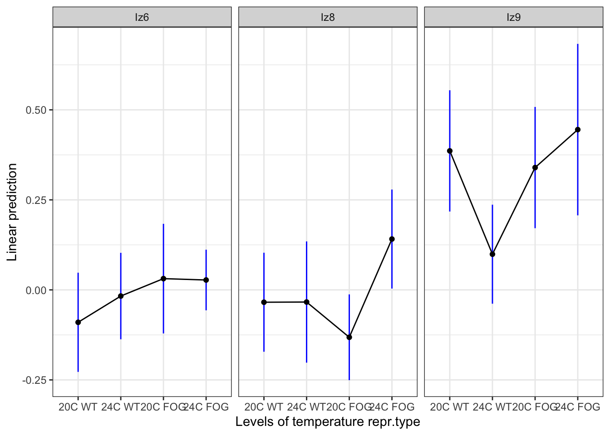
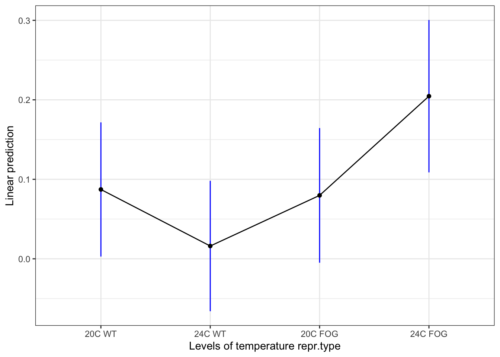
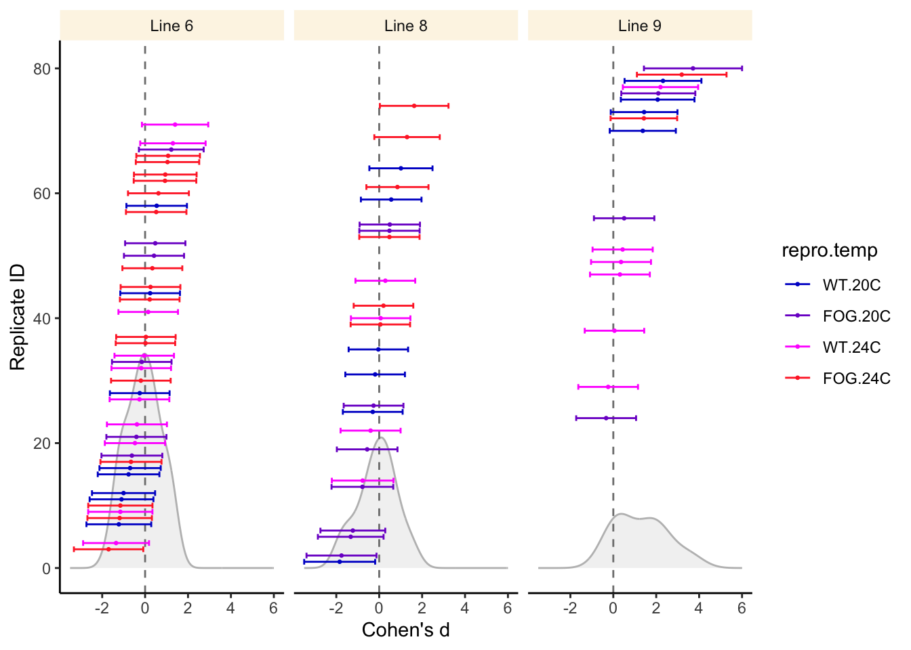

C. elegans analysis
library(ggplot2)
library(here)
library(lme4)
library(lmerTest)
library(glmmTMB)Warning in checkDepPackageVersion(dep_pkg = "TMB"): Package version inconsistency detected.
glmmTMB was built with TMB version 1.9.1
Current TMB version is 1.9.2
Please re-install glmmTMB from source or restore original 'TMB' package (see '?reinstalling' for more information)library(car)
library(tidyverse)
library(emmeans)
library(asreml)Online License checked out Fri Feb 24 15:50:13 2023library(metafor)Data wrangling
Restructuring the data to calculate fitness difference (effect size).
First load the data:
alldata <- read.table(here("Data", "all.csv"), sep = ";", head = T, stringsAsFactors = T)
ancdata <- read.table(here("Data", "anc.csv"), sep = ";", head = T, stringsAsFactors = T)Summarise the non-ancestral data to have means in each of 4 repeats:
alldata_2 <- alldata %>%
filter(anc_pop != "X") %>%
group_by(block_unique) %>%
summarise(mean_Nstart = mean(propN_start),
mean_N1 = mean(propN_F1),
SD_Nstart = sd(propN_start),
SD_N1 = sd(propN_F1),
population = unique(population),
isoline = unique(isoline),
temperature = unique(temperature),
repr.type = unique(repr.type),
anc_pop = unique(anc_pop),
.groups = "drop")Summarise the ancestral data to have means in each of 4 repeats:
ancdata_2 <- ancdata %>%
group_by(block_unique) %>%
summarise(mean_Nstart_anc = mean(propN_start),
mean_N1_anc = mean(propN_F1),
SD_Nstart_anc = sd(propN_start),
SD_N1_anc = sd(propN_F1))Merge actual data and ancestral data:
alldata_2 <- alldata_2 %>%
left_join(ancdata_2, by = c("anc_pop" = "block_unique")) %>%
select(-anc_pop)
glimpse(alldata_2)Rows: 80
Columns: 13
$ block_unique <fct> I.I_E02_Iz6, I.I_E05_Iz6, I.I_E06_Iz6, I.I_E08_Iz6, I.…
$ mean_Nstart <dbl> 0.5818966, 0.5750916, 0.7437037, 0.6898734, 0.6875000,…
$ mean_N1 <dbl> 0.3776727, 0.4294794, 0.5099959, 0.3424359, 0.4647014,…
$ SD_Nstart <dbl> 0, 0, 0, 0, 0, 0, 0, 0, 0, 0, 0, 0, 0, 0, 0, 0, 0, 0, …
$ SD_N1 <dbl> 0.05545831, 0.05415434, 0.02281169, 0.02699229, 0.0166…
$ population <fct> E02, E05, E06, E08, E09, E73, E74, E75, K11, K32, K60,…
$ isoline <fct> Iz6, Iz6, Iz6, Iz6, Iz6, Iz6, Iz6, Iz6, Iz6, Iz6, Iz6,…
$ temperature <fct> 24C, 24C, 24C, 24C, 24C, 24C, 24C, 24C, 20C, 20C, 20C,…
$ repr.type <fct> FOG, FOG, FOG, FOG, FOG, WT, WT, WT, WT, WT, FOG, FOG,…
$ mean_Nstart_anc <dbl> 0.5939742, 0.5939742, 0.5939742, 0.5939742, 0.5939742,…
$ mean_N1_anc <dbl> 0.3680913, 0.3680913, 0.3680913, 0.3680913, 0.3680913,…
$ SD_Nstart_anc <dbl> 0, 0, 0, 0, 0, 0, 0, 0, 0, 0, 0, 0, 0, 0, 0, 0, 0, 0, …
$ SD_N1_anc <dbl> 0.025064967, 0.025064967, 0.025064967, 0.025064967, 0.…Effect sizes
We will use two types of fitness measures (for now without explicit errors): proportion difference and (natural log) of proportion ratio.
alldata_2 <- alldata_2 %>%
mutate(fitness_ee_1 = mean_N1 - mean_Nstart,
fitness_ee_2 = mean_N1/mean_Nstart,
fitness_ee_3 = log(mean_N1/mean_Nstart),
fitness_anc_1 = mean_N1_anc - mean_Nstart_anc,
fitness_anc_2 = mean_N1_anc/mean_Nstart_anc,
fitness_anc_3 = log(mean_N1_anc/mean_Nstart_anc),
repr.type = relevel(repr.type, ref = "WT"))Let’s see the properties of these measures:
ggplot(alldata_2) +
geom_density(mapping = aes(x = fitness_ee_1), colour = "brown") +
geom_density(mapping = aes(x = fitness_ee_2), colour = "red") +
geom_density(mapping = aes(x = fitness_ee_3), colour = "orange") +
theme_classic()
ggplot(alldata_2) +
geom_density(mapping = aes(x = fitness_anc_1), colour = "darkblue") +
geom_density(mapping = aes(x = fitness_anc_2), colour = "blue") +
geom_density(mapping = aes(x = fitness_anc_3), colour = "turquoise") +
theme_classic()
As expected - the log(proportion_1/proportion_0) has much better distributional properties.
Let’s turn it into a simple effect size (fitness difference, for now without any sampling variance calculation):
alldata_2 <- alldata_2 %>%
mutate(d_1 = fitness_ee_1 - fitness_anc_1,
d_2 = fitness_ee_2 - fitness_anc_2,
d_3 = fitness_ee_3 - fitness_anc_3)Analysis using lmer()
model1 <- lmer(d_1 ~ isoline * temperature * repr.type + (1|population), data = alldata_2)boundary (singular) fit: see help('isSingular')model2 <- lmer(d_2 ~ isoline * temperature * repr.type + (1|population), data = alldata_2)boundary (singular) fit: see help('isSingular')model3 <- lmer(d_3 ~ isoline * temperature * repr.type + (1|population), data = alldata_2)boundary (singular) fit: see help('isSingular')summary(model1)Linear mixed model fit by REML. t-tests use Satterthwaite's method [
lmerModLmerTest]
Formula: d_1 ~ isoline * temperature * repr.type + (1 | population)
Data: alldata_2
REML criterion at convergence: -144.9
Scaled residuals:
Min 1Q Median 3Q Max
-2.00316 -0.59848 0.05253 0.58230 2.86831
Random effects:
Groups Name Variance Std.Dev.
population (Intercept) 0.000000 0.00000
Residual 0.005085 0.07131
Number of obs: 80, groups: population, 35
Fixed effects:
Estimate Std. Error df t value
(Intercept) -0.04438 0.02521 68.00000 -1.760
isolineIz8 0.03813 0.03851 68.00000 0.990
isolineIz9 0.18667 0.04367 68.00000 4.275
temperature24C 0.03371 0.03382 68.00000 0.997
repr.typeFOG 0.06055 0.03851 68.00000 1.572
isolineIz8:temperature24C -0.05396 0.05712 68.00000 -0.945
isolineIz9:temperature24C -0.14368 0.05712 68.00000 -2.515
isolineIz8:repr.typeFOG -0.08151 0.05446 68.00000 -1.497
isolineIz9:repr.typeFOG -0.06854 0.06345 68.00000 -1.080
temperature24C:repr.typeFOG -0.05268 0.04806 68.00000 -1.096
isolineIz8:temperature24C:repr.typeFOG 0.16047 0.07688 68.00000 2.087
isolineIz9:temperature24C:repr.typeFOG 0.22186 0.09078 68.00000 2.444
Pr(>|t|)
(Intercept) 0.0828 .
isolineIz8 0.3256
isolineIz9 6.11e-05 ***
temperature24C 0.3225
repr.typeFOG 0.1205
isolineIz8:temperature24C 0.3482
isolineIz9:temperature24C 0.0143 *
isolineIz8:repr.typeFOG 0.1391
isolineIz9:repr.typeFOG 0.2838
temperature24C:repr.typeFOG 0.2769
isolineIz8:temperature24C:repr.typeFOG 0.0406 *
isolineIz9:temperature24C:repr.typeFOG 0.0171 *
---
Signif. codes: 0 '***' 0.001 '**' 0.01 '*' 0.05 '.' 0.1 ' ' 1
Correlation of Fixed Effects:
(Intr) islnI8 islnI9 tmp24C rp.FOG isI8:24C isI9:24C iI8:.F iI9:.F
isolineIz8 -0.655
isolineIz9 -0.577 0.378
tempertr24C -0.745 0.488 0.430
repr.typFOG -0.655 0.429 0.378 0.488
islnIz8:24C 0.441 -0.674 -0.255 -0.592 -0.289
islnIz9:24C 0.441 -0.289 -0.764 -0.592 -0.289 0.351
islnI8:.FOG 0.463 -0.707 -0.267 -0.345 -0.707 0.477 0.204
islnI9:.FOG 0.397 -0.260 -0.688 -0.296 -0.607 0.175 0.526 0.429
tmp24C:.FOG 0.525 -0.343 -0.303 -0.704 -0.801 0.417 0.417 0.567 0.486
iI8:24C:.FO -0.328 0.501 0.189 0.440 0.501 -0.743 -0.261 -0.708 -0.304
iI9:24C:.FO -0.278 0.182 0.481 0.373 0.424 -0.221 -0.629 -0.300 -0.699
t24C:. iI8:24C:
isolineIz8
isolineIz9
tempertr24C
repr.typFOG
islnIz8:24C
islnIz9:24C
islnI8:.FOG
islnI9:.FOG
tmp24C:.FOG
iI8:24C:.FO -0.625
iI9:24C:.FO -0.529 0.331
optimizer (nloptwrap) convergence code: 0 (OK)
boundary (singular) fit: see help('isSingular')summary(model2)Linear mixed model fit by REML. t-tests use Satterthwaite's method [
lmerModLmerTest]
Formula: d_2 ~ isoline * temperature * repr.type + (1 | population)
Data: alldata_2
REML criterion at convergence: -55.5
Scaled residuals:
Min 1Q Median 3Q Max
-2.3456 -0.5324 -0.0754 0.4152 3.5639
Random effects:
Groups Name Variance Std.Dev.
population (Intercept) 0.00000 0.0000
Residual 0.01893 0.1376
Number of obs: 80, groups: population, 35
Fixed effects:
Estimate Std. Error df t value
(Intercept) -0.07398 0.04865 68.00000 -1.521
isolineIz8 0.05132 0.07431 68.00000 0.691
isolineIz9 0.50076 0.08426 68.00000 5.943
temperature24C 0.05925 0.06527 68.00000 0.908
repr.typeFOG 0.09333 0.07431 68.00000 1.256
isolineIz8:temperature24C -0.06884 0.11022 68.00000 -0.625
isolineIz9:temperature24C -0.39185 0.11022 68.00000 -3.555
isolineIz8:repr.typeFOG -0.14814 0.10509 68.00000 -1.410
isolineIz9:repr.typeFOG -0.24933 0.12243 68.00000 -2.037
temperature24C:repr.typeFOG -0.06493 0.09273 68.00000 -0.700
isolineIz8:temperature24C:repr.typeFOG 0.25625 0.14835 68.00000 1.727
isolineIz9:temperature24C:repr.typeFOG 0.51977 0.17517 68.00000 2.967
Pr(>|t|)
(Intercept) 0.132962
isolineIz8 0.492187
isolineIz9 1.07e-07 ***
temperature24C 0.367198
repr.typeFOG 0.213405
isolineIz8:temperature24C 0.534366
isolineIz9:temperature24C 0.000693 ***
isolineIz8:repr.typeFOG 0.163193
isolineIz9:repr.typeFOG 0.045586 *
temperature24C:repr.typeFOG 0.486186
isolineIz8:temperature24C:repr.typeFOG 0.088653 .
isolineIz9:temperature24C:repr.typeFOG 0.004146 **
---
Signif. codes: 0 '***' 0.001 '**' 0.01 '*' 0.05 '.' 0.1 ' ' 1
Correlation of Fixed Effects:
(Intr) islnI8 islnI9 tmp24C rp.FOG isI8:24C isI9:24C iI8:.F iI9:.F
isolineIz8 -0.655
isolineIz9 -0.577 0.378
tempertr24C -0.745 0.488 0.430
repr.typFOG -0.655 0.429 0.378 0.488
islnIz8:24C 0.441 -0.674 -0.255 -0.592 -0.289
islnIz9:24C 0.441 -0.289 -0.764 -0.592 -0.289 0.351
islnI8:.FOG 0.463 -0.707 -0.267 -0.345 -0.707 0.477 0.204
islnI9:.FOG 0.397 -0.260 -0.688 -0.296 -0.607 0.175 0.526 0.429
tmp24C:.FOG 0.525 -0.343 -0.303 -0.704 -0.801 0.417 0.417 0.567 0.486
iI8:24C:.FO -0.328 0.501 0.189 0.440 0.501 -0.743 -0.261 -0.708 -0.304
iI9:24C:.FO -0.278 0.182 0.481 0.373 0.424 -0.221 -0.629 -0.300 -0.699
t24C:. iI8:24C:
isolineIz8
isolineIz9
tempertr24C
repr.typFOG
islnIz8:24C
islnIz9:24C
islnI8:.FOG
islnI9:.FOG
tmp24C:.FOG
iI8:24C:.FO -0.625
iI9:24C:.FO -0.529 0.331
optimizer (nloptwrap) convergence code: 0 (OK)
boundary (singular) fit: see help('isSingular')summary(model3)Linear mixed model fit by REML. t-tests use Satterthwaite's method [
lmerModLmerTest]
Formula: d_3 ~ isoline * temperature * repr.type + (1 | population)
Data: alldata_2
REML criterion at convergence: -31
Scaled residuals:
Min 1Q Median 3Q Max
-2.4977 -0.5537 -0.1069 0.5102 3.3330
Random effects:
Groups Name Variance Std.Dev.
population (Intercept) 0.00000 0.0000
Residual 0.02717 0.1648
Number of obs: 80, groups: population, 35
Fixed effects:
Estimate Std. Error df t value
(Intercept) -0.09001 0.05827 68.00000 -1.545
isolineIz8 0.05572 0.08901 68.00000 0.626
isolineIz9 0.47604 0.10093 68.00000 4.716
temperature24C 0.07288 0.07818 68.00000 0.932
repr.typeFOG 0.12127 0.08901 68.00000 1.362
isolineIz8:temperature24C -0.07232 0.13203 68.00000 -0.548
isolineIz9:temperature24C -0.35980 0.13203 68.00000 -2.725
isolineIz8:repr.typeFOG -0.21857 0.12588 68.00000 -1.736
isolineIz9:repr.typeFOG -0.16758 0.14665 68.00000 -1.143
temperature24C:repr.typeFOG -0.07670 0.11108 68.00000 -0.690
isolineIz8:temperature24C:repr.typeFOG 0.34893 0.17771 68.00000 1.963
isolineIz9:temperature24C:repr.typeFOG 0.46898 0.20984 68.00000 2.235
Pr(>|t|)
(Intercept) 0.12708
isolineIz8 0.53342
isolineIz9 1.24e-05 ***
temperature24C 0.35452
repr.typeFOG 0.17758
isolineIz8:temperature24C 0.58566
isolineIz9:temperature24C 0.00816 **
isolineIz8:repr.typeFOG 0.08704 .
isolineIz9:repr.typeFOG 0.25715
temperature24C:repr.typeFOG 0.49225
isolineIz8:temperature24C:repr.typeFOG 0.05368 .
isolineIz9:temperature24C:repr.typeFOG 0.02871 *
---
Signif. codes: 0 '***' 0.001 '**' 0.01 '*' 0.05 '.' 0.1 ' ' 1
Correlation of Fixed Effects:
(Intr) islnI8 islnI9 tmp24C rp.FOG isI8:24C isI9:24C iI8:.F iI9:.F
isolineIz8 -0.655
isolineIz9 -0.577 0.378
tempertr24C -0.745 0.488 0.430
repr.typFOG -0.655 0.429 0.378 0.488
islnIz8:24C 0.441 -0.674 -0.255 -0.592 -0.289
islnIz9:24C 0.441 -0.289 -0.764 -0.592 -0.289 0.351
islnI8:.FOG 0.463 -0.707 -0.267 -0.345 -0.707 0.477 0.204
islnI9:.FOG 0.397 -0.260 -0.688 -0.296 -0.607 0.175 0.526 0.429
tmp24C:.FOG 0.525 -0.343 -0.303 -0.704 -0.801 0.417 0.417 0.567 0.486
iI8:24C:.FO -0.328 0.501 0.189 0.440 0.501 -0.743 -0.261 -0.708 -0.304
iI9:24C:.FO -0.278 0.182 0.481 0.373 0.424 -0.221 -0.629 -0.300 -0.699
t24C:. iI8:24C:
isolineIz8
isolineIz9
tempertr24C
repr.typFOG
islnIz8:24C
islnIz9:24C
islnI8:.FOG
islnI9:.FOG
tmp24C:.FOG
iI8:24C:.FO -0.625
iI9:24C:.FO -0.529 0.331
optimizer (nloptwrap) convergence code: 0 (OK)
boundary (singular) fit: see help('isSingular')emmip(model3, ~temperature+repr.type|isoline, CIs = T,
CIarg = list(col = "blue")) +
theme_bw()
emmip(model3, ~temperature+repr.type, CIs = T,
CIarg = list(col = "blue")) +
theme_bw()NOTE: Results may be misleading due to involvement in interactions
The patterns largely agree with what we can see in the model.
Sampling variances and meta-analysis
The sampling variances of subsequent effect sizes are based on several relationships. The sampling variances of raw proportions are (because we do not have \(N\) for all cases - we will have to make some assumptions, probably not too bold anyways)
\[ var(p)=\frac{p(1-p)}{N}, \]
and variance of the average of 4 proportions is (from stats theory)
\[var(\hat{p}) = \frac{\sum_{i} var(p_{i})}{n^{2}} = \frac{1}{16}\sum_{i} var(p_{i}).\] Variance of a difference of two proportions \(W_{1}=\hat{p}_{2}-\hat{p}_{1}\) is (from the delta method) \(var(W_{1})=var(\hat{p}_{2})+var(\hat{p}_{1})\). We are ignoring here covariance of two proportions (which is reasonable, they should not covary in general ’casue are the result of (unpredictable) competition) - but above we also ignored covariance of 4 replicated proportion which may not be reasonable, in such case we would have to increase the estimate (maybe worth trying) assuming some correlation \(r\):
\[var(\hat{p}) = \frac{\sum_{i} var(p_{i}) + 2\sum_{i}\sum_{j<1}cov(p_{i}p_{j})}{n^{2}} = \\ \frac{1}{16}\sum_{i} var(p_{i})+2\sum_{i}\sum_{j>i}r \sqrt{var(p_{i})}\sqrt{var(p_{j})}.\] This correction can be seen as an alternative to correcting for multiple comparisons (and it actually achieves what we need - decreases Type I error in zero-ES cases to roughly 5%).
Sampling variance of a log ratio is (from delta method):
\[var(W_{2}) = var[ln(\frac{\hat{p_{2}}}{\hat{p_{1}}})] = \\ [\frac{\partial}{\partial \hat{p_{2}}}(ln\:\hat{p_{2}}-ln\:\hat{p_{1}})]^{2}\:var(p_{2}) + \\ [\frac{\partial}{\partial \hat{p_{1}}}(ln\:\hat{p}_{2}-ln\:\hat{p}_{1})]^{2}\:var(\hat{p}_{1}) = \\ \frac{1}{\hat{p_{2}}^{2}}\:var(\hat{p_{2}})+\frac{1}{\hat{p_{1}}^{2}}\:var(\hat{p_{1}}).\]
And finally - using those variances and fitness estimates - we can calculate \(d\) and it’s sampling variance (in the usual way):
\[d = \frac {{W_{x,ee}} - {W_{x,anc}}} {s_{pooled}}J,\] \[s_{pooled} = \sqrt{\frac{(n_{1}-1)\:var(W_{x,ee})+(n_{2}-1)\:var(W_{x,anc})}{n_{ee}+n_{anc}-2}},\]
\[J = 1-\frac{3}{4(n_{ee}+n_{anc}-2)-1}.\]
First - let’s calculate relevant effect sizes and sampling variances. We need to repeat the above calculations adding proportion sampling variance to original data:
correction <- 2*3*0.8*0.0005
# this correction assumes that on average variance of proportion estimation here is 0.0005
# (close to actual averages of 0.0003-0.0006) and that (due to coming from the same
# realisation of breeding the 4 replicates are strongly correlated (r = 0.8)
# number 3 comes from the fact that in a 4x4 covariance matrix there are 3 correlations
alldata_2 <- alldata %>%
filter(anc_pop != "X") %>%
mutate(varNstart = (propN_start*(1-propN_start))/sum,
varN1 = (propN_F1*(1-propN_F1))/(sum)) %>%
group_by(block_unique) %>%
summarise(mean_Nstart = mean(propN_start),
mean_N1 = mean(propN_F1),
var_Nstart = (sum(varNstart)/16)+correction,
var_N1 = (sum(varN1)/16)+correction,
population = unique(population),
isoline = unique(isoline),
temperature = unique(temperature),
repr.type = unique(repr.type),
anc_pop = unique(anc_pop),
.groups = "drop")ancdata_2 <- ancdata %>%
mutate(varNstart = (propN_start*(1-propN_start))/sum,
varN1 = (propN_F1*(1-propN_F1))/(sum)) %>%
group_by(block_unique) %>%
summarise(mean_Nstart_anc = mean(propN_start),
mean_N1_anc = mean(propN_F1),
var_Nstart_anc = (sum(varNstart)/16)+correction,
var_N1_anc = (sum(varN1)/16)+correction)Merge actual data and ancestral data:
alldata_2 <- alldata_2 %>%
left_join(ancdata_2, by = c("anc_pop" = "block_unique")) %>%
select(-anc_pop)
glimpse(alldata_2)Rows: 80
Columns: 13
$ block_unique <fct> I.I_E02_Iz6, I.I_E05_Iz6, I.I_E06_Iz6, I.I_E08_Iz6, I.…
$ mean_Nstart <dbl> 0.5818966, 0.5750916, 0.7437037, 0.6898734, 0.6875000,…
$ mean_N1 <dbl> 0.3776727, 0.4294794, 0.5099959, 0.3424359, 0.4647014,…
$ var_Nstart <dbl> 0.002519465, 0.002639630, 0.002484285, 0.002524753, 0.…
$ var_N1 <dbl> 0.002514981, 0.002638783, 0.002510318, 0.002531016, 0.…
$ population <fct> E02, E05, E06, E08, E09, E73, E74, E75, K11, K32, K60,…
$ isoline <fct> Iz6, Iz6, Iz6, Iz6, Iz6, Iz6, Iz6, Iz6, Iz6, Iz6, Iz6,…
$ temperature <fct> 24C, 24C, 24C, 24C, 24C, 24C, 24C, 24C, 20C, 20C, 20C,…
$ repr.type <fct> FOG, FOG, FOG, FOG, FOG, WT, WT, WT, WT, WT, FOG, FOG,…
$ mean_Nstart_anc <dbl> 0.5939742, 0.5939742, 0.5939742, 0.5939742, 0.5939742,…
$ mean_N1_anc <dbl> 0.3680913, 0.3680913, 0.3680913, 0.3680913, 0.3680913,…
$ var_Nstart_anc <dbl> 0.002550122, 0.002550122, 0.002550122, 0.002550122, 0.…
$ var_N1_anc <dbl> 0.002543473, 0.002543473, 0.002543473, 0.002543473, 0.…alldata_2 <- alldata_2 %>%
mutate(fitness_ee_1 = mean_N1 - mean_Nstart,
fitness_ee_2 = log(mean_N1/mean_Nstart),
var_f_ee_1 = var_Nstart + var_N1,
var_f_ee_2 = (1/mean_N1^2)*var_N1 + (1/mean_Nstart^2)*var_Nstart,
fitness_anc_1 = mean_N1_anc - mean_Nstart_anc,
fitness_anc_2 = log(mean_N1_anc/mean_Nstart_anc),
var_f_anc_1 = var_Nstart_anc + var_N1_anc,
var_f_anc_2 = (1/mean_N1_anc^2)*var_N1_anc + (1/mean_Nstart_anc^2)*var_Nstart_anc,
repr.type = relevel(repr.type, ref = "WT"))Finally let’s calculate Hedge’s \(g\):
J <- 1 - (3/(4*(4+4-2) - 1))
alldata_2 <- alldata_2 %>%
mutate(d_1 = J*(fitness_ee_1 - fitness_anc_1)/sqrt((3*var_f_ee_1 + 3*var_f_anc_1)/(4+4-2)),
d_2 = J*(fitness_ee_2 - fitness_anc_2)/sqrt((3*var_f_ee_2 + 3*var_f_anc_2)/(4+4-2)),
var_d_1 = (8/16)+(d_1^2/16),
var_d_2 = (8/16)+(d_2^2/16))Meta-analysis
alldata_2 <- mutate(alldata_2, weight_1 = 1/var_d_1, weight_2 = 1/var_d_2)
alldata_2$esid <- as.factor(1:nrow(alldata_2))
# ES = difference in proportions
model1 <- rma.mv(d_1 ~ isoline * temperature * repr.type,
random = list(~ 1|population,
~ 1|esid),
data = alldata_2,
V = var_d_1)
summary(model1)
Multivariate Meta-Analysis Model (k = 80; method: REML)
logLik Deviance AIC BIC AICc
-81.3927 162.7855 190.7855 221.8586 198.7100
Variance Components:
estim sqrt nlvls fixed factor
sigma^2.1 0.0000 0.0000 35 no population
sigma^2.2 0.0000 0.0001 80 no esid
Test for Residual Heterogeneity:
QE(df = 68) = 77.4421, p-val = 0.2028
Test of Moderators (coefficients 2:12):
QM(df = 11) = 42.9071, p-val < .0001
Model Results:
estimate se zval pval
intrcpt -0.5032 0.2597 -1.9371 0.0527
isolineIz8 0.4688 0.3985 1.1763 0.2395
isolineIz9 2.1836 0.4902 4.4542 <.0001
temperature24C 0.3600 0.3488 1.0320 0.3021
repr.typeFOG 0.6847 0.3924 1.7449 0.0810
isolineIz8:temperature24C -0.6400 0.5851 -1.0938 0.2740
isolineIz9:temperature24C -1.7659 0.6200 -2.8482 0.0044
isolineIz8:repr.typeFOG -0.9321 0.5593 -1.6666 0.0956
isolineIz9:repr.typeFOG -1.3909 0.7060 -1.9701 0.0488
temperature24C:repr.typeFOG -0.5422 0.4911 -1.1040 0.2696
isolineIz8:temperature24C:repr.typeFOG 1.7765 0.7880 2.2543 0.0242
isolineIz9:temperature24C:repr.typeFOG 3.0495 1.0413 2.9286 0.0034
ci.lb ci.ub
intrcpt -1.0122 0.0059 .
isolineIz8 -0.3123 1.2498
isolineIz9 1.2228 3.1445 ***
temperature24C -0.3237 1.0437
repr.typeFOG -0.0844 1.4538 .
isolineIz8:temperature24C -1.7869 0.5068
isolineIz9:temperature24C -2.9811 -0.5507 **
isolineIz8:repr.typeFOG -2.0283 0.1641 .
isolineIz9:repr.typeFOG -2.7747 -0.0072 *
temperature24C:repr.typeFOG -1.5048 0.4204
isolineIz8:temperature24C:repr.typeFOG 0.2319 3.3210 *
isolineIz9:temperature24C:repr.typeFOG 1.0086 5.0904 **
---
Signif. codes: 0 '***' 0.001 '**' 0.01 '*' 0.05 '.' 0.1 ' ' 1model2 <- rma.mv(d_2 ~ isoline * temperature * repr.type,
random = list(~ 1|population,
~ 1|esid),
data = alldata_2,
V = var_d_2)
summary(model2)
Multivariate Meta-Analysis Model (k = 80; method: REML)
logLik Deviance AIC BIC AICc
-82.2477 164.4954 192.4954 223.5685 200.4199
Variance Components:
estim sqrt nlvls fixed factor
sigma^2.1 0.0000 0.0000 35 no population
sigma^2.2 0.0252 0.1587 80 no esid
Test for Residual Heterogeneity:
QE(df = 68) = 78.9367, p-val = 0.1715
Test of Moderators (coefficients 2:12):
QM(df = 11) = 46.1937, p-val < .0001
Model Results:
estimate se zval pval
intrcpt -0.5066 0.2656 -1.9076 0.0564
isolineIz8 0.4350 0.4063 1.0706 0.2843
isolineIz9 2.2553 0.5021 4.4921 <.0001
temperature24C 0.3917 0.3566 1.0983 0.2721
repr.typeFOG 0.6391 0.4025 1.5877 0.1123
isolineIz8:temperature24C -0.5159 0.5969 -0.8643 0.3874
isolineIz9:temperature24C -1.7290 0.6347 -2.7241 0.0064
isolineIz8:repr.typeFOG -1.1218 0.5737 -1.9552 0.0506
isolineIz9:repr.typeFOG -1.4045 0.7205 -1.9494 0.0512
temperature24C:repr.typeFOG -0.4300 0.5040 -0.8532 0.3935
isolineIz8:temperature24C:repr.typeFOG 1.8047 0.8071 2.2360 0.0254
isolineIz9:temperature24C:repr.typeFOG 2.8437 1.0596 2.6838 0.0073
ci.lb ci.ub
intrcpt -1.0270 0.0139 .
isolineIz8 -0.3614 1.2314
isolineIz9 1.2713 3.2394 ***
temperature24C -0.3073 1.0906
repr.typeFOG -0.1498 1.4281
isolineIz8:temperature24C -1.6857 0.6540
isolineIz9:temperature24C -2.9730 -0.4850 **
isolineIz8:repr.typeFOG -2.2463 0.0027 .
isolineIz9:repr.typeFOG -2.8166 0.0076 .
temperature24C:repr.typeFOG -1.4177 0.5578
isolineIz8:temperature24C:repr.typeFOG 0.2228 3.3865 *
isolineIz9:temperature24C:repr.typeFOG 0.7669 4.9204 **
---
Signif. codes: 0 '***' 0.001 '**' 0.01 '*' 0.05 '.' 0.1 ' ' 1Forest plot of all effect sizes
alldata_2$repro.temp <- interaction(alldata_2$repr.type, alldata_2$temperature)
densscale <- 0.025
iso_labs <- c("Line 6", "Line 8", "Line 9")
names(iso_labs) <- c("Iz6", "Iz8", "Iz9")
ggplot(data = arrange(alldata_2, d_2)) +
geom_density(aes(x = d_2, y = (..count..)*densscale*nrow(alldata_2)),
colour = "gray", fill = "gray95", trim = F) +
geom_vline(xintercept = 0, col = 'gray50', lty = 2) +
geom_point(size = 0.5, aes(x = d_2, y = 1:nrow(alldata_2),
colour = repro.temp)) +
geom_errorbarh(aes(y = 1:nrow(alldata_2),
xmin = d_2-1.96*sqrt(var_d_2), xmax = d_2+1.96*sqrt(var_d_2),
colour = repro.temp)) +
theme_classic() +
scale_colour_manual(values = c("blue3", "purple3", "magenta", "firebrick1")) +
labs(x = 'Cohen\'s d', y = 'Replicate ID', ) +
facet_grid(~ isoline,
labeller = labeller(isoline = iso_labs)) +
theme(strip.background = element_rect(fill = "oldlace", linewidth = 0))Warning: The dot-dot notation (`..count..`) was deprecated in ggplot2 3.4.0.
ℹ Please use `after_stat(count)` instead.